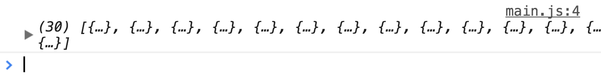

Asynchronous functions are functions created with the async keyword. They let you use an await keyword to wait for promises to resolve. This await lets you write asynchronous code as if they were synchronous.
Declaring asynchronous functions
You declare asynchronous functions with an async keyword. The async keyword must be placed before the function keyword.
// Function declaration
async function functionName (arguments) {
// Do something asynchronous
}
You can also create asynchronous functions with the arrow function syntax. In this case, you write async before the arguments.
This means you can treat asynchronous functions like promises. If you return a value from an asynchronous function, you can use that value in the next then call.
We know Fetch returns a promise. We can use await to wait for Fetch’s promise to resolve in an asynchronous function. We can declare a variable to hold this resolved value.
If you log repos, you’ll see a list of 30 repositories.

"await" waits for the promise to resolve once more
Return await
There’s no need to await before returning a promise. You can return the promise directly.
If you return await something, you resolve the original promise first. Then, you create a new promise from the resolved value. So return await effectively does nothing. No need for the extra step. We can return the promise directly.
const fetchRepo = async link => {
const response = await fetch(link)
// No need to do this
return await response.json()
}
const fetchRepo = async link => {
const response = await fetch(link)
// Do this instead
return response.json()
}
Handling errors
await waits for the promise to resolve. It only waits for the then call. This means won’t handle errors in the asynchronous function we wrote.
Let’s see this in action. Say we await for a promise that always throws an error, errorPromise. You’ll see an “uncaught” error in your console.
We get this “uncaught” error message because we didn’t catch the error in our code. The console caught it for us, and it tells us that we need to catch the error.
We can use a try/catch block to handle errors in an asynchronous function. A try/catch block looks like this:
try {
// Try something that may cause an error
} catch (error) {
// Do something if an error occurs
}
Promises that resolve will always go into the try block. Promises that reject will always go into the catch block.
const asyncFunction = async _ => {
try {
const res = errorPromise()
// Code continues here if successful
} catch(error) {
// Code goes here if something goes wrong
console.log(error)
}
}
Error was caught and logged
The try block works like this: it executes code from top to bottom, left to right (like normal). When it encounters an error, it skips the rest of the code and goes straight to the catch block.
const asyncFunction = async _ => {
try {
const res = await errorPromise()
console.log('JavaScript will never read this line of code!')
} catch(error) {
console.log(error)
}
}
The promise catcher
Error handling with try/catch works, but it makes the code harder to digest. We don’t want to write try/catch blocks for every asynchronous function we write. It would be horrible!
For this example, imagine that getOne, getTwo and getThree are promises).
We know asynchronous functions return promises. This means we can catch errors with a catch call after calling an asynchronous function. With the catch call in place, we no longer need to write try/catch blocks.
const asyncFunction = async _ => {
const one = await getOne(false)
const two = await getTwo(false)
const three = await getThree(false)
}
asyncFunction()
.catch(e => console.log(e)) // Error: Something went wrong!
Exercise
Use an asynchronous function to fetch a list of your repositories